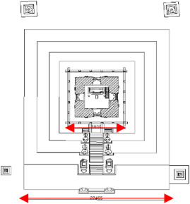

Table of contents |
|---|
| Abstract |
| Introduction |
| Basic introduction to Nepalese temple architecture |
| Bhiravanath and Nyatapola structural analysis |
| Conclusion |
| References |
The Nyatapola and Bhairavnath temples were some of Nepal’s historic monuments to survive the Gorkha earthquake in 2015. When looking further clever engineering techniques were used to make the temples more resilient and sturdier. The first look was into walls and how they decrease in mass on every level in the temple creating a cone shape in destruction which is hard to knock over. The foundations have a stepped plinth system that acts as a damper and a stiff base, so any soil displacement is negated. Finally, the roofs are built on every floor to prevent weathering damage to the walls. On the other hand, rehabilitation and rebuilding have been put in place by replacing damaged walls or fixing torsional drifted roofs with plans. These are one of many ways these national monuments stand upright through harsh times.
The Gorkha earthquake was one of the largest to hit Nepal due to its 7.6 magnitude hitting the south border of China (Shilpakar, Prajapati, Kawan, et al., 2019). The earthquake emerged when the Indian plate submerged the Eurasian plate, affecting 57 out of the 75 districts (Bhagat, et al. 2017). Due to this devastating earthquake, many monuments and temples were damaged 743 across Nepal (Bhagat, et al. 2017). Kathmandu and Bhaktapur were the main places affected the heaviest, leading to the highest damage in their historical heritage sites (Shilpakar, Prajapati, Kawan, et al., 2019). 2900 historical buildings were affected with 133 collapsed, and 95 partially collapsed (Shilpakar, Prajapati, Kawan, et al., 2019;l Bhagat, et al. 2017)). This paper investigates what temples like the Nyatapola and Bhairavnath have structurally and what caused damage to them.
Basic introduction to Nepalese temple architecture. Nepalese temples have three main types of temple architecture. Varying from towered (Shikara figure 1), domed (Shupta figure 2), and multi-tiered (Pagoda figure 3). Figure 4 shows the key historical periods and how they have influenced the temple's architecture and materials.
The wall structure is mainly constructed with brick masonry (Shilpakar, Maskey, and Silpakar, 2021) which is dry and can settle internal small displacements and shifts of the bricks during an earthquake (Nienhuys, 2003). Thinner walls and outer walls were also different, the inner being made from fired clay bricks and the outer from stronger sundried bricks (Shilpakar, Maskey, and Silpakar, 2021). The elasticity of the mud mortar is around 87MPa to 150MPa according to UNESCO (Pejatovic, Sarhosis and Milani, 2019). This also adds extra rigidity and strength to the reinforced walls with the mortar on. The walls lessen in thickness the further up the tiers (Shilpakar, Maskey, and Silpakar, 2021) meaning that there is less weight at the top (Nienhuys, 2003). The asymmetry in the mass distribution along the height of the structure (Nienhuys, 2003). Allowing the temple to keep rigidity as if its mass is in a cone-like shape to its harder to push over (Nienhuys, 2003). The walls are susceptible to damage as in both temples’ masonry walls experienced many shearing, compression, and vertical cracks because the unsupported, thin walls experienced greater shifts in movement. (Shilpakar, Maskey, and Silpakar, 2021) Rehabilitation was in place one strategy being timber frames seen in Figure 5. (Shilpakar, Maskey, and Silpakar, 2021)
The foundations (plinths) built are usually exposed they proved stability to the temple as they are usually as wide as the temple itself. (Pejatovic, Sarhosis and Milani, 2019; Shilpakar, Maskey, and Silpakar, 2021). This plinth acts as a stiff base for the temple by reducing the ground-shaking effects of an earthquake (Shilpakar, Maskey, and Silpakar, 2021). The roofs are held up on purlins; purlins are horizontal beams that go across a roof to hold it in place seen in Figure 7 . Furthermore, plinths also help stabilise temples against any soft soil displacement(Pejatovic, Sarhosis and Milani, 2019). Allowing the temple to have a solid foundation (Pejatovic, Sarhosis and Milani, 2019). The plinths also vary from temple to temple and heavier plinths tend to have good resistance to the shearing forces (slipping forces) (Pejatovic, Sarhosis and Milani, 2019; Nienhuys, 2003). They can also be receding plinths that are wider at the bottom and meet the first floor of the temple in steps (Pejatovic, Sarhosis and Milani, 2019; Nienhuys, 2003). These plinths also provide safety against rainwater, which stops dampness from affecting the masonry and the wood (Shilpakar, Maskey, and Silpakar, 2021). This was one of the reasons why the Nyatapola temple had the least damage due to the plinths acting as a dampener and softening the force felt on the upper structure ((Wood, et al., 2020; Shilpakar, Maskey, and Silpakar, 2021).
< The roofing system is made up of planks of wood with a thin layer of mud on top which then has the roof tiles on top. The tiles are brass plates or gold-plated copper plates (Shilpakar, Maskey, and Silpakar, 2021; Nienhuys, 2003). These plates are layered on top of each other in a pattern that stops the rainwater from dampening the struts and purlins and causing damage (Shilpakar, Maskey, and Silpakar, 2021). Furthermore, the roofs are sloped and positioned on every floor to stop the sun and rain from affecting the walls from any damage (Shilpakar, Maskey, and Silpakar, 2021). The roofs are held up on purlins; purlins are horizontal beams that go across a roof to hold it in place seen in Figure 7 (Shilpakar, Maskey, and Silpakar, 2021; Nienhuys, 2003) . However, the damage caused in the Bhairavnath Temple was due to a lack of ventilation. Causing the posts to decay up to 700-780mmn (Shilpakar, Maskey, and Silpakar, 2021; Bhagat, et al. 2017). Leading to them needing to be replaced (Shilpakar, Maskey, and Silpakar, 2021 ; Bhagat, et al. 2017). The Nyatapola temple on the other hand experienced torsional drift on the roofs varying from 0.15 to 3.25 degrees. This was due to both the decreasing mass to be easily rotated and the connection timber frames experienced some damage(Wood, et al., 2020).
This paper explored what makes the Nyatapola and Bhairavnath temples resistant to the Gorkha earthquake. After exploring the components of the temple, the findings showed the materials used in combination with clever engineering techniques led to strong and stable structures. The clever use of multi-tier floors decreased in mass, which gave added structural rigidity. Furthermore, the use of tiered plinths added extra dampening against the forces of an earthquake. On top of that the clever use of roofing each tier allows the building to be protected from the sun and rain. The temples although not destroyed did sustain damage and rehabilitation programs were needed.
Shilpakar, R., Maskey, P.N. and Silpakar, P. (2021) Construction technology of multi-tiered temples and their rehabilitation after 2015 April earthquake in Bhaktapur, Progress in Disaster Science. Available at: https://www.sciencedirect.com/science/article/pii/S2590061721000375?via%3Dihub (Accessed: 20 October 2023). Pejatovic, M., Sarhosis, V. and Milani, G. (2019) Multi-tiered Nepalese temples: Advanced numerical investigations for assessing performance at failure under horizontal loads. Available at: https://www-sciencedirect-com.surrey.idm.oclc.org/science/article/pii/S1350630719308489 (Accessed: 01 November 2023). Sengupta, U. (2023) Lost in transition? emerging forms of residential architecture in Kathmandu, Cities. Available at: https://www.academia.edu/23857207/Lost_in_transition_Emerging_forms_of_residential_architecture_in_Kathmandu (Accessed: 28 November 2023). Wood, R.L. et al. (2020) Damage assessment and modeling of the five-tiered pagoda-style Nyatapola Temple, Earthquake Spectra. Available at: https://pubs.geoscienceworld.org/earthquake-spectra/article-abstract/33/1_suppl/377/585469/Damage-Assessment-and-Modeling-of-the-Five-Tiered (Accessed: 28 November 2023). Nienhuys, S. (2003) Sjoerd Nienhuys | Technical Advisor | Architectural Engineer., Options for Reconstruction and Retrofitting of Historic Pagoda Temples. Example of the Narayan Temple, Kathmandu Durbar Square. Available at: https://www.researchgate.net/publication/232659617_Options_for_Reconstruction_and_Retrofitting_of_Historic_Pagoda_ Temples_Example_of_the_Narayan_Temple_Kathmandu_Durbar_Square (Accessed: 28 November 2023). Bhagat, S. et al. (2017) Damage to cultural heritage structures and buildings due to the 2015 ..., Damage to Cultural Heritage Structures and Buildings Due to the 2015 Nepal Gorkha Earthquake. Available at: https://www.tandfonline.com/doi/full/10.1080/13632469.2017.1309608 (Accessed: 02 December 2023). Shilpakar, R., Prajapati, A., Kawan, C.K., et al. (2019) Condition assessment of bhairavnath temple after 2015 gorkha (Nepal ..., Condition Assessment of Bhairavnath Temple After 2015 Gorkha (Nepal) Earthquake. Available at:https://www.researchgate.net/profile/Manjip-Shakya/publication/332726407_Condition_Assessment_of_Bhairavnath_Temple_After_2015_Gorkha_Nepal_Earthquake/links/5cc685824585156cd7b99b7b/Condition-Assessment -of-Bhairavnath-Temple-After-2015-Gorkha-Nepal-Earthquake.pdf (Accessed: 02 December 2023). Fuhrmann, T. (2023) Nyatapola Temple, Wikipedia. Available at: https://en.wikipedia.org/wiki/Nyatapola_Temple#/media/File:Kathmandu_und_Bhaktapur_2013-05-11_16-03-39.jpg (Accessed: 03 December 2023). Unknown, U. (2023) Shikhara, Wikipedia. Available at: https://en.wikipedia.org/wiki/Shikhara#/media/File:Khajuraho3.jpg (Accessed: 03 December 2023). Gagnon , B. (2023) Stupa, Wikipedia. Available at: https://en.wikipedia.org/wiki/Stupa#/media/File:Stupa_1,_Sanchi_02.jpg (Accessed: 03 December 2023).